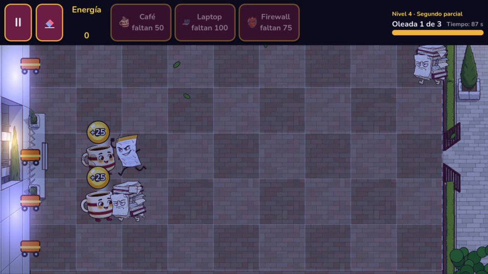
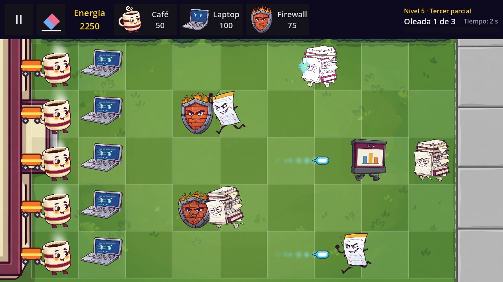

El juego
Cada semestre, las tareas que nadie entregó despiertan en el Archivo Muerto y marchan hacia los salones. Coloca defensores —el Café, la Laptop y el Firewall— en un tablero de 5 × 9 para detenerlas antes de que lleguen a la escuela, y resiste hasta enfrentar al jefe final: El examen final.
- El Primer semestre se juega en la plaza de la ESCOM; los siguientes semestres llegarán en próximas versiones.
- El Director te guía con un tutorial y diálogos a lo largo del semestre.
- Calificaciones del 6 al 10, Extraordinarios por carril y un Expediente con las cartas y enemigos que vas conociendo.
- Música y efectos originales, hechos por el equipo.
- Sin anuncios, sin cuentas y sin conexión a internet.


Prueba cerrada
Por ahora, Defensa ESCOM solo está disponible para las personas invitadas a su prueba cerrada en Google Play.
- Tu correo de Google (el que usas en Play Store) tiene que estar en la lista de verificadores.
- Abre el enlace de invitación con esa misma cuenta y acepta participar en la prueba.
- Instala Defensa ESCOM desde Google Play. Si encuentras algún problema, cuéntanos desde la ficha de la app o por correo.
Créditos
Proyecto de la asignatura Desarrollo de Aplicaciones Móviles Nativas (grupo 7CV4) de la Escuela Superior de Cómputo del Instituto Politécnico Nacional.
Desarrollo
- Cruz Villa Miguel Ángel
- Hernández Alonso Diego Raymundo
- Martínez Martínez Carlos Daniel
- Reyes Olascoaga Julio César
Publicación en Google Play: Gabriel Hurtado. Hecho con Godot Engine; tipografía Nunito (SIL Open Font License).